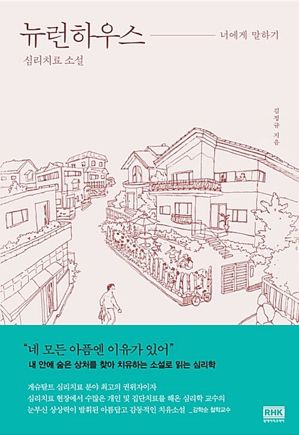

함께 읽기
한 문단씩 돌아가며 소리 내어 읽습니다.
낭만북클럽 · 시즌 18
열여덟 번째 함께 읽을 책
너에게 말하기
내 안의 숨은 상처를 찾아 치유하는 심리치료 소설.
함께 소리 내어 읽고, 서로의 마음에 귀 기울입니다.
2026년 11월 2일–30일 · 평일 오전 6–7시

01 / 이번 책
베를린에서 심리치료 연구소를 운영하던 영민은 한국의 작은 셰어하우스, 뉴런하우스와 함께하게 됩니다. 그곳에서 여덟 명의 남녀와 집단상담을 하며 서로의 마음을 만납니다.
김정규 작가가 오랜 상담 경험을 바탕으로 쓴 이 소설은, 인물들의 말과 관계를 따라가며 자신과 타인을 돌아보도록 초대합니다.
작가의 말 · 부록 「마음 들여다보기, 작품 해설」
02 / 일정
11월의 평일 아침,
각자의 자리에서 Zoom으로 만납니다.
한 문단씩 돌아가며 소리 내어 읽습니다.
마음에 남은 장면에서 각자의 이야기를 시작합니다. 대화 안내 보기 →
회차별 낭독 범위와 부록 포함 여부는 추후 안내합니다. 진도는 함께 읽는 속도에 맞춰 조율합니다.
03 / 참여 안내
함께 읽을 자리를 남겨 주세요
이름과 별칭, 짧은 자기소개, 『뉴런하우스』를 펼치기 전의 마음을 남겨 주세요.
11월 2일 월요일 오전 6시, 첫 새벽에 만나겠습니다.
첫 만남을 기다리며
친구에게 글을 남기듯, 편안한 수평어로 인사해 주셔도 좋습니다.
지금의 마음과 함께 읽고 싶은 이유를 여러분의 말로 들려주세요.
인사를 불러오고 있습니다.
책을 미리 읽어 오실 필요는 없습니다. 『뉴런하우스』와 Zoom에 접속할 기기를 준비해 주세요.
신청부터 첫날까지의 흐름, 별칭과 대화 방식, 자주 묻는 질문은 참여 길잡이에 정리했습니다.
처음 오셨나요 · 참여 길잡이 →카카오뱅크 · 3333-35-0705695
예금주 박영준
시즌 18 인사말을 남긴 후 입금해 주세요.